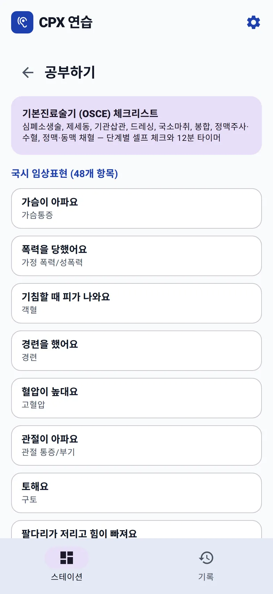
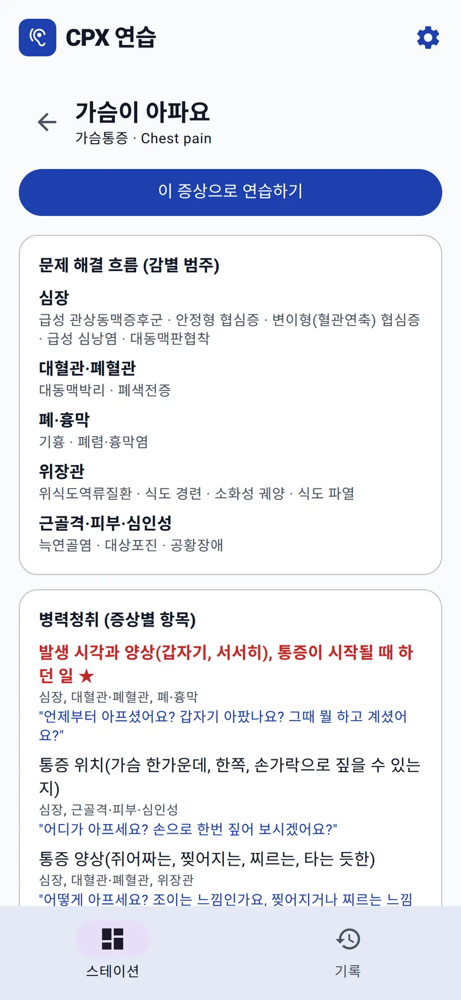
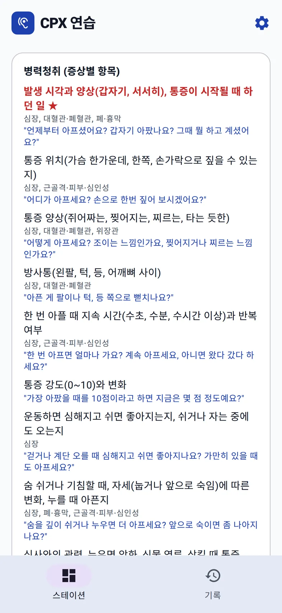
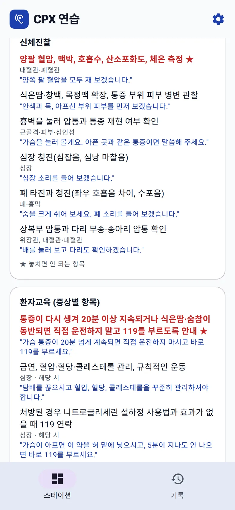
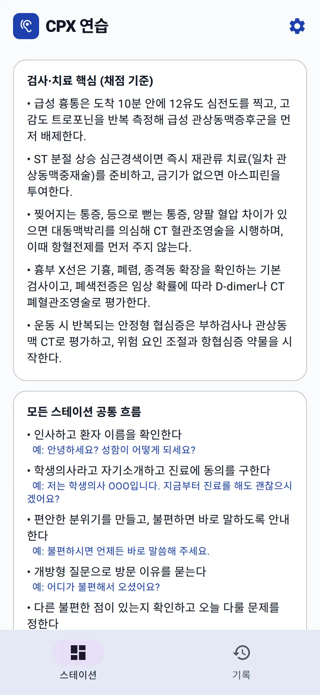
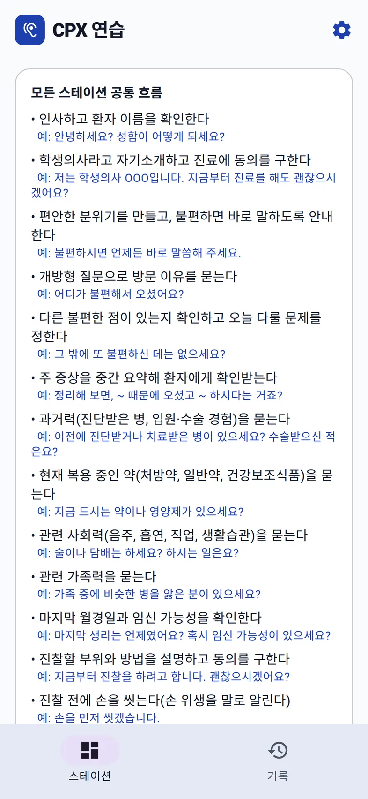

홈 › KMLE CPX 연습 › 공부하기: 임상표현 공부 노트
공부하기
CPX 48개 임상표현 공부 노트
CPX는 "무엇을 물어야 하는지"를 알면 절반은 끝난다. 웹 앱의 공부하기는 48개 임상표현마다 감별해야 할 질환 묶음, 꼭 물어야 할 항목, 그 항목을 실제로 묻는 한국어 문장을 한 화면에 모아 둔 공부 노트다. AI를 쓰지 않아서 Gemini 키 없이도 볼 수 있다.
어디에 있나
CPX 홈의 공부하기를 누르면 맨 위에 기본진료술기(OSCE) 체크리스트가 있고, 그 아래로 국시 임상표현 48개가 "가슴이 아파요 · 가슴통증"처럼 환자 말투와 증상명으로 나란히 나온다. 하나를 누르면 그 임상표현의 공부 노트가 열리고, 맨 위의 이 증상으로 연습하기를 누르면 바로 그 증상의 스테이션으로 들어간다.


1. 문제 해결 흐름: 감별 범주부터
노트는 감별진단을 범주로 묶어서 시작한다. 가슴통증이라면 이렇게 다섯 묶음이다.
| 범주 | 질환 |
|---|---|
| 심장 | 급성 관상동맥증후군 · 안정형 협심증 · 변이형(혈관연축) 협심증 · 급성 심낭염 · 대동맥판협착 |
| 대혈관·폐혈관 | 대동맥박리 · 폐색전증 |
| 폐·흉막 | 기흉 · 폐렴·흉막염 |
| 위장관 | 위식도역류질환 · 식도 경련 · 소화성 궤양 · 식도 파열 |
| 근골격·피부·심인성 | 늑연골염 · 대상포진 · 공황장애 |
이 범주가 아래 모든 항목에 꼬리표로 붙는다. 그래서 질문 하나를 외울 때 "이 질문이 어느 범주를 가르는지"를 같이 외우게 된다.
2. 병력청취: 항목, 가르는 범주, 할 말
항목마다 세 줄이다. 무엇을 확인하는지, 어느 감별 범주와 관련되는지, 그리고 환자에게 실제로 할 말. 빨간 글씨와 ★는 놓치면 안 되는 항목이다.
발생 시각과 양상(갑자기, 서서히), 통증이 시작될 때 하던 일 ★
심장, 대혈관·폐혈관, 폐·흉막
"언제부터 아프셨어요? 갑자기 아팠나요? 그때 뭘 하고 계셨어요?"
한쪽 다리 부종·통증, 최근 수술·장거리 비행·장기 부동 ★
대혈관·폐혈관
"최근에 수술을 받았거나 오래 비행기를 타셨나요? 한쪽 다리가 붓지는 않나요?"
가슴통증에는 이런 항목이 20개 남짓 있다. 위치, 양상, 방사통, 지속 시간, 강도, 운동과의 관계, 호흡·자세에 따른 변화, 식사와의 관련, 동반 증상, 최근 감기, 피부 발진, 불안 증상, 심혈관 위험 요인, 이전 같은 통증과 시술 경험, 외상까지 차례로 나온다.

3. 신체진찰과 환자교육
신체진찰도 같은 형식이다. 가슴통증에서 ★가 붙은 진찰은 양팔 혈압을 포함한 활력징후다. 대동맥박리를 거르는 항목이라서다. 진찰할 때 할 말도 붙어 있다. "양쪽 팔 혈압을 모두 재 보겠습니다."
환자교육은 증상별로 꼭 해야 할 말을 준다. 가슴통증에서는 "가슴 통증이 20분 넘게 계속되면 직접 운전하지 마시고 바로 119를 부르세요."가 ★ 항목이다. 금연·혈압·혈당 관리, 니트로글리세린 설하정 쓰는 법, 위식도역류 생활 수칙처럼 "해당 시"에만 하는 교육은 따로 표시된다.


4. 검사·치료 핵심 (채점 기준)
마지막 설명 단계에서 무엇을 말해야 하는지는 검사·치료 핵심에 있다. 결과표의 '진단·계획' 점수가 이 기준으로 매겨진다. 가슴통증이라면 예를 들어 이런 내용이다.
- 급성 흉통은 도착 10분 안에 12유도 심전도를 찍고, 고감도 트로포닌을 반복 측정해 급성 관상동맥증후군을 먼저 배제한다.
- 찢어지는 통증, 등으로 뻗는 통증, 양팔 혈압 차이가 있으면 대동맥박리를 의심해 CT 혈관조영술을 시행하며, 이때 항혈전제를 먼저 주지 않는다.
5. 모든 스테이션 공통 흐름
노트 끝에는 증상과 관계없이 모든 스테이션에서 하는 흐름이 예문과 함께 있다. 인사와 이름 확인, 자기소개와 동의, 개방형 질문, "그 밖에 또 불편하신 데는 없으세요?", 중간 요약, 과거력·약물·사회력·가족력, 마지막 월경, 진찰 전 손 위생과 동의까지. 실제 스테이션 결과표에서 '다른 불편한 점 확인'이 누락으로 잡혔던 것도 바로 이 목록의 한 줄이다.

이렇게 쓰면 좋다
- 입실 전 5분: 오늘 할 임상표현의 감별 범주와 ★ 항목만 훑는다. 문장을 외우지 말고 범주를 머리에 넣는다.
- 입실: 이 증상으로 연습하기로 바로 스테이션에 들어가 12분 동안 진료한다. 진료 중에는 노트를 보지 않는다.
- 결과표를 받은 뒤: 누락된 항목을 노트에서 찾아 그 옆의 예문을 소리 내어 두 번 읽는다. 다음에 같은 증상을 만나면 그 문장이 먼저 나온다.